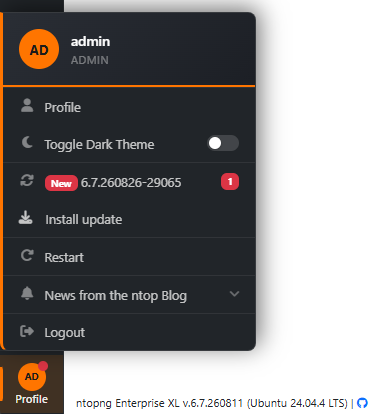

Installation
ntopng is open source and available on GitHub. In addition, pre-compiled, binary ntopng packages are available both for Linux and Windows. Installation instructions for binary packages are available below.
Installing on Linux
Installation instructions can be found at http://packages.ntop.org/. Development and stable builds are available. Stable builds are intended for production environments whereas development builds are intended for testing or early feature access.
By default, freshly installed packages disable the plain HTTP web interface and enable HTTPS on port 3001 (i.e. ntopng is reachable at https://<host>:3001), using a self-signed certificate. See SSL/HTTPS for details on replacing it with your own certificate.
Installing on macOS
Package
macOS installation packages can be found at http://packages.ntop.org/ and are installed with a GUI.
Note
macOS install package is not signed hence prior to install it, you need:
locate the ntopng package (usually under the Downloads directory). Suppose its name is ntopng-6.X.YYYY-macos-arm64.pkg
xattr -d com.apple.quarantine ntopng-6.X.YYYY-macos-arm64.pkg
double click on the installer icon
ntopng requires Redis to be installed in order to start, therefore you must install it first using Homebrew as listed below in this section.
After the installation, ntopng is started and active on local HTTPS port 3001 (i.e. ntopng is reachable at https://127.0.0.1:3001), while the plain HTTP port is disabled by default.
If you want to uninstall ntopng you can open a terminal and type sudo /usr/local/bin/ntopng-uninstall.sh
To enable geolocation, macOS packages require database files to be manually placed under /usr/local/share/ntopng/httpdocs/geoip. Detailed instructions on how to obtain database files and install them are available at https://github.com/ntop/ntopng/blob/dev/doc/README.geolocation.md/. Once the files have been downloaded and placed in the folder, a restart of ntopng is necessary to read load them.
The ntopng configuration file is installed in /usr/local/etc/ntopng/ntopng.conf that can be edited (as privileged user) with a text editor.
The ntopng service can be started/stopped using the launchctl command:
[Start]
sudo launchctl load /Library/LaunchDaemons/org.ntop.ntopng.plist[Stop]
sudo launchctl unload /Library/LaunchDaemons/org.ntop.ntopng.plist
Homebrew
Install
brew install redisStart redis
brew services start redisStart ntopng
sudo ntopng
Installing on Windows
Only the development build binary is available for Windows. The binary can be downloaded from the Windows package repository.
Download the ntopng zip file from the link above, locate it in
the filesystem, and unzip it to access the actual ntopng
installer. Double-click on the installer. The installation procedure
will start and ntopng will be installed, along with its dependencies.
The installation procedure installs
ntopng
Note
If upgrading from an earlier version of ntopng for Windows, it is safe to skip the installation of any ntopng dependency. It is safe to respond ‘No’ or click ‘Cancel’ when prompted to install Redis.
The ntopng installer comes without capture drivers. You need to install manually npcap drivers BEFORE you install ntopng. If Wireshark is already installed on Windows, then npcap drivers are already installed and no driver installation is necessary.

During npcap installation you need to select “Install Npcap in WinPcap API-compatible Mode”.
In case you see a message as the one below

it means that your capture drivers have not been properly installed and that you have to install them as described in this section.
Installing on FreeBSD
Installation instructions can be found at http://packages.ntop.org/.
Installing on OPNsense/pfSense
OPNsense installation instructions are available in the OPNsense integration page. pfSense installation instructions are available in the pfSense integration page.
Note
On some versions, the redis package comes with a default configuration that is suboptimal for OPNsense/pfSense. Please edit /usr/local/etc/redis.conf and check the line dir /var/db/redis/ that specifies where redis leeps the database. Such database must be on persistent storage (i.e. the disk) and not in the ramdisk as for instance on pfSense. In this case you can fix he problem setting it to dir /var/db/pkg/ntopng/ or to any other appropriate directory that is on persistent storage and not in ramdisk.
Warning
Please remember that OPNsense/pfSense devices have often limited resources. If you have to monitor a large network, we suggest you to consider running nProbe (that has limited resources usage and do not need disk stoage for keeping historical data) on OPNsense/pfSense that exports flow towards ntopng running on an host on the LAN that has more resources available.
Installing on a Container
To install ntopng (ntop tools in general) in a container, a step by step guide can be found here: Using ntop tools on Docker.
The Docker images of ntop tools can be found in Docker Hub.
Here instead an other guide regarding Best Practices for using ntop tools on Containers.
Updating the Software on Linux
General instructions for updating the software can be found at http://packages.ntop.org/ together with the installation instructions. Depending on the Operating System.
It is also possible to check for software updates through the Web interface using the top-right menu as shown in the picture below. The system automatically checks for new updates overnight and report the new version if any. Otherwise it is also possible to force the check for new versions by clicking on Check for updates and waiting a few seconds (up to 1 minute) for the check to be performed.
Alternatively it is possible to check for update from the command line (Instructions for updating the software via command line can be found also at http://packages.ntop.org/)


Check for Updates Menu
In the same menu, whenever a new ntopng version is available, it is possible to install it by clicking on Install update, as depicted below.
It is also possible to configure ntopng to self-update itself overnight, this can be enabled through Settings > Preferences > Updates. By default ntopng does not update itself overnight as it requires restarting the service, but if you want you can enable this preference and let ntopng do everything automatically.

Automatic Updates Setting